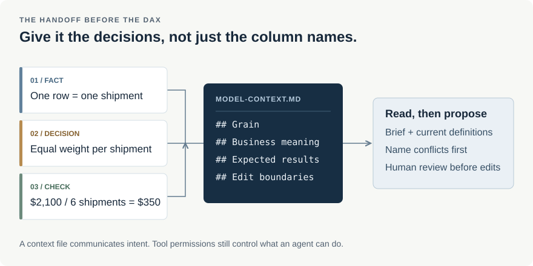

At the workbench · AI context
The context I'd give an AI agent before touching a Power BI model
“Add average freight charge to the report” sounds like a small request.
It stops being small when the agent has to guess whether a row means a shipment,
a charge line, or a monthly snapshot. All three can have a column called
NET_CHARGE. They do not necessarily support the same calculation.
Before asking for DAX, I would write down the decisions that the model files cannot reliably explain. A short Markdown file is a convenient place for that. The useful part is the content, not the extension.
This example uses the fictional shipments from my incremental-refresh project. It is a sample handoff, not a description of an employer's model or internal AI setup.

Start with the thing that can go wrong
For this model, I want average charge per shipment in the current filter context. Not average charge per carrier, and not average per event record. That distinction belongs in the brief before naming a particular DAX function.
# Shipment reporting: model context
## What one row means
- Shipments contains one current row per SHIPMENT_ID.
- NET_CHARGE is the total shipment charge in USD.
- No currency conversion is needed in this example.
## Requested calculation
Average charge = total charge / shipment count
within the current report filters.
Do not average carrier-level averages.
Do not remove filters to make the total match.An agent can inspect the schema and find a unique shipment ID. That is evidence about these rows, not proof of the business definition. If the brief says one row per shipment but the source repeats IDs, I want it to stop and show the mismatch, rather than hide it with a distinct count.
You only need a little Markdown
Save a plain-text file with an .md extension and open it in an editor.
A heading starts with #; ## introduces a section.
A hyphen starts a list item. Backticks distinguish a field name such as
SHIPMENT_ID from surrounding prose.
I would use a fenced code block for an expression or a query, so its line breaks stay readable. A relative link can point to a nearby definition or SQL file. That is enough for this brief. It does not need badges, a large table of contents, or a separate section for every column.
What you write · .md
## Before editing
Read `Shipments.tmdl` and show the existing measures.
**Do not change relationships for this task.**
See [source checks](incremental-refresh-setup.sql).What the reader sees
Before editing
Read Shipments.tmdl and show the existing measures.
Do not change relationships for this task.
See source checks.
The heading groups the task, the code spans identify objects, and the relative link points to the SQL beside the downloadable brief. Formatting helps readers; it is not an instruction-priority system.
Separate a model fact from today's request
“Charges are in USD” should remain useful next week. “Add an average-charge measure” should not become a permanent instruction that an agent keeps trying to carry out. I would keep the first in model context and the second in the current task.
The downloadable brief separates durable definitions from a worked task. Before using it in another model, replace the assumptions and remove the worked task once it is finished. A stale instruction can be harder to spot than a missing one, especially when it is written confidently.
The same applies to uncertainty. If cancellation rules have not been agreed, write “cancellation treatment is unresolved; ask before implementing.” Do not fill the gap with whichever rule makes the sample total look sensible. This particular fixture has no cancellation field, so it cannot settle that question.
Give the agent a result it can disagree with
“Validate the measure” leaves too much open. For the six initial shipments, the charge total is $2,100 and the shipment count is six, so the expected average is $350. Filtering to the two shipments dated September 21 and 22 gives $1,100 across two shipments, or $550.
| Scope | Charge | Shipments | Average |
|---|---|---|---|
| All six rows | $2,100 | 6 | $350 |
| September 21–22 | $1,100 | 2 | $550 |
| No matching shipments | Blank | Blank or 0* | Blank |
*The count display depends on the existing count measure. The requested average
uses DIVIDE without an alternate result, so an empty or zero denominator returns blank.
Those checks are small enough to understand without trusting an agent's explanation. They also give it a reason to challenge the instructions if the actual model behaves differently. After the correction script, the old $350 expectation no longer applies. A useful check names its data state, not just its expected number.
A file is not automatically in the conversation
I would place supporting documentation in a docs folder alongside the
project definitions, then explicitly ask the agent to read the brief and the relevant
model files. A normal Markdown document is not automatically loaded just because it
exists in the repository.
Some tools recognise specific instruction filenames or folders. The names, scope and
precedence depend on the tool, so I would check its documentation instead of assuming
that every agent reads every .md file. I also would not store arbitrary
notes inside generated model definitions and assume Power BI will preserve them.
The actual request
Read the context brief and the current shipment measures. Tell me what you can confirm, what conflicts, and which files you would change. Do not edit yet. If the grain or charge definition is unclear, ask before proposing DAX.
That gives me a checkpoint before the edit. Afterwards I would ask for the changed expression, the checks actually run, and anything still unverified. Clear Markdown helps communicate the work; it does not grant permissions, enforce read-only access, or prove that the work is correct.
Keep credentials and client data out of the brief. Table names, source queries and business definitions can also be sensitive, even without sample rows. Use only material approved for the tool and environment.
What prompted this note
Tabular Editor's A beginner’s guide to writing Markdown for AI context prompted this example. Their article introduces the format; this note focuses on the information I would supply for one reporting change.
For the syntax itself, see GitHub's Markdown reference.